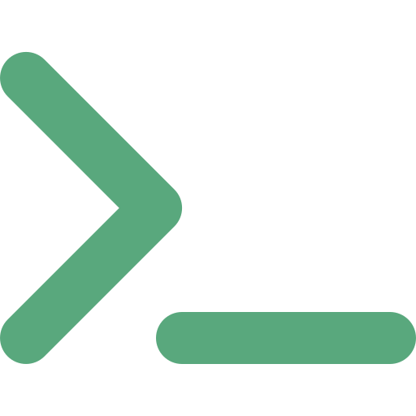

Portada
Arquitectura de Software
Semana 6 — Catálogo POSA: Tuberías y Filtros, Blackboard
Universidad de Antioquia · Ingeniería de Sistemas · 2554608 · 2026-2

Apertura
Un solo carácter
|

Caso · Ficha técnica
El pipe de Unix
| Idea original | Memo interno de Doug McIlroy, investigador de los Bell Labs (AT&T), año 1964 |
|---|---|
| Propuesta | Conectar programas entre sí "como una manguera de jardín": la salida de uno alimenta directamente la entrada de otro |
| Implementación | Incorporada al sistema operativo Unix por Ken Thompson en la versión 3 de Unix (Unix v3), 1973 |
| Sintaxis en el shell | El operador | (barra vertical o "pipe") |
| Vigencia | El mismo operador sigue funcionando igual, más de 50 años después, en Linux, macOS y otros sistemas tipo Unix |
Caso documentado en la historia oficial de Unix y en escritos posteriores del propio McIlroy sobre la filosofía de diseño de Bell Labs.
Caso · El problema antes del pipe
Programas que no se hablaban entre sí
Antes de 1973, si un programador quería que la salida de un programa sirviera de entrada a otro, tenía que guardar un archivo intermedio en disco, ejecutar el segundo programa apuntando a ese archivo, y borrar el archivo temporal después. Cada combinación de programas exigía este mismo trabajo manual y repetitivo.
McIlroy insistía con sus colegas de Bell Labs en que los programas deberían poder conectarse directamente, sin pasar por archivos intermedios ni que un programa necesitara saber nada especial sobre el otro.
Caso · Un comando real
Encadenando filtros con |
cat access.log | grep ERROR | sort | uniq -c | sort -rn | headCada segmento entre barras es un programa independiente, ejecutado como parte de una sola línea:
cat access.log— lee el archivo de registrogrep ERROR— se queda solo con las líneas que contienen "ERROR"sort— ordena esas líneas alfabéticamenteuniq -c— cuenta cuántas veces se repite cada líneasort -rn— ordena esos conteos de mayor a menorhead— muestra solo los primeros resultados
Ninguno de estos seis programas fue escrito pensando en los otros cinco — y aun así funcionan juntos.
Caso · Por qué fue tan influyente
"Hacer una cosa, y hacerla bien"
El pipe de Unix popularizó una filosofía de diseño que hoy sigue citándose en la ingeniería de software:
- Composabilidad: programas pequeños se combinan para resolver tareas que ninguno resolvía solo, sin escribir código nuevo.
- Reutilización: el mismo
greposortsirve en miles de combinaciones distintas, escrito una sola vez. - Independencia: cada programa solo conoce su entrada estándar y su salida estándar — no conoce ni le importa qué hay al otro lado del pipe.
Esta filosofía —programas pequeños, independientes, conectados por flujos de datos— es exactamente la idea detrás del patrón arquitectónico que vemos hoy: Pipes and Filters (Tuberías y Filtros).
Transición
De un truco de terminal a un patrón arquitectónico
Lo que McIlroy diseñó como una función del shell de Unix, el catálogo POSA (Pattern-Oriented Software Architecture, de Frank Buschmann y colegas) lo documentó formalmente como uno de los patrones más usados para diseñar sistemas completos, no solo comandos de terminal.
Veamos su definición formal: el patrón Pipes and Filters (Tuberías y Filtros).
Concepto
Pipes and Filters: definición formal
El patrón Pipes and Filters estructura un sistema que procesa un flujo de datos en una serie de pasos de transformación independientes.
- Cada paso de procesamiento se encapsula en un componente llamado filtro.
- Los filtros se conectan entre sí mediante tuberías (pipes): canales que transportan datos de la salida de un filtro a la entrada del siguiente.
- Los datos fluyen a través de la cadena de filtros y se transforman de forma incremental, un paso a la vez.
Documentado en el catálogo POSA de Buschmann, Meunier, Rohnert, Sommerlad y Stal — el mismo catálogo del que estudiaremos varios patrones durante toda la Unidad 2.
Concepto
Filtro y tubería, definidos
| Filtro | Componente que transforma los datos que recibe y produce una nueva salida. No conoce a los filtros anteriores ni posteriores en la cadena — solo sabe leer una entrada y escribir una salida. |
|---|---|
| Tubería | Conector que transporta datos entre dos filtros, sin transformarlos. En Unix es literalmente un buffer del sistema operativo; en otras arquitecturas puede ser una cola de mensajes o un stream. |
| Fuente / sumidero | El primer filtro de la cadena típicamente produce datos desde una fuente (un archivo, un sensor); el último los entrega a un sumidero (pantalla, base de datos, otro sistema). |
Propiedad clave: cada filtro es reemplazable e independiente — se puede insertar, quitar o reordenar un filtro sin modificar los demás, igual que insertar un nuevo comando en medio de una línea de Unix.
Concepto
Ventajas y limitaciones
| Cuándo ayuda | Cuándo no | |
|---|---|---|
| Naturaleza del flujo | Transformación secuencial y predecible de datos: ETL, procesamiento de streams, compiladores (léxico → sintáctico → semántico) | Interacción compleja entre pasos, donde un paso necesita "volver atrás" o negociar con otro |
| Estado | Cada filtro puede ser sin estado (stateless), fácil de probar y de paralelizar | Problemas que requieren estado compartido entre varios componentes al mismo tiempo |
| Composición | Alta reutilización: el mismo filtro sirve en muchas cadenas distintas | Rendimiento si hay muchas conversiones de formato entre filtros (costo de "traducir" datos en cada tubería) |
Contraejemplo
Cuando la cadena no es la respuesta
Imaginen un sistema que debe reconocer una palabra hablada: necesita analizar el sonido a nivel fonético, compararlo contra palabras conocidas, verificar si encaja gramaticalmente en la frase, y decidir si tiene sentido con el contexto de la conversación — todo al mismo tiempo, porque la mejor hipótesis fonética puede depender de lo que ya se entendió a nivel de significado, y viceversa.
Un pipeline lineal —fonética, luego léxico, luego sintaxis, luego semántica, en ese orden fijo— no funciona bien aquí: cada etapa necesitaría "consultar" a las demás, no solo pasarles datos hacia adelante. Este es exactamente el problema que enfrentó uno de los sistemas más citados en la historia de la inteligencia artificial.
Caso · Ficha técnica
HEARSAY-II
| Institución | Carnegie Mellon University (Pittsburgh, Estados Unidos) |
|---|---|
| Período | Desarrollado durante la primera mitad de la década de 1970 |
| Financiamiento | Programa Speech Understanding Research (SUR) de DARPA (agencia de investigación avanzada del Departamento de Defensa de EE. UU.) |
| Objetivo | Comprensión de habla continua: entender oraciones completas dichas en voz natural, no solo palabras aisladas |
| Legado | El sistema del que la literatura de arquitectura de software tomó el nombre y la estructura del patrón Blackboard |
Documentado por su propio equipo (Erman, Hayes-Roth, Lesser, Reddy, entre otros) en publicaciones académicas de la época, incluida una revisión extensa en ACM Computing Surveys.
Caso · El contexto del problema
Entender voz requiere varias fuentes de conocimiento a la vez
Para que una computadora entendiera una frase hablada, HEARSAY-II tenía que combinar información de fuentes de conocimiento muy distintas, cada una experta en un aspecto del problema:
- Acústico-fonética: qué sonidos hay realmente en la señal de audio.
- Léxica: qué palabras del vocabulario coinciden con esos sonidos.
- Sintáctica: qué combinaciones de palabras son gramaticalmente válidas.
- Semántica y de contexto: qué tiene sentido dado el tema de la conversación.
Ninguna de estas fuentes, por sí sola, tenía suficiente información para decidir la respuesta correcta — y la mejor hipótesis de una fuente casi siempre dependía de pistas producidas por otra.
Caso · La solución
Una pizarra compartida, no una cadena fija
El equipo de HEARSAY-II diseñó una estructura de datos compartida —la "pizarra" (blackboard)— donde cada fuente de conocimiento podía leer las hipótesis que otras habían escrito, y escribir las suyas propias, sin seguir un orden fijo. Una fuente sintáctica, por ejemplo, podía escribir en la pizarra una restricción que hiciera que la fuente fonética reconsiderara una hipótesis ya descartada.
Un componente de control decidía, en cada momento, cuál fuente de conocimiento debía actuar a continuación, según qué tan prometedoras se veían las hipótesis disponibles en ese instante.
Este mecanismo de colaboración oportunista —sin secuencia fija— es lo que la literatura posterior formalizó como el patrón arquitectónico Blackboard.
Transición
De un sistema de reconocimiento de voz a un patrón general
Igual que el pipe de Unix se convirtió en el patrón Pipes and Filters, la arquitectura de HEARSAY-II se convirtió en el patrón Blackboard del catálogo POSA — usado hoy en diagnóstico médico asistido, sistemas de planeación, y otros problemas donde no hay un algoritmo determinista claro.
Veamos su definición formal.
Concepto
Blackboard: definición formal
El patrón Blackboard se usa para problemas en los que no existe una estrategia determinista conocida para llegar a la solución, y en cambio se necesita combinar de forma oportunista los aportes de varios expertos parciales sobre un mismo espacio de trabajo compartido.
- Un componente pizarra (blackboard): estructura de datos compartida donde se acumulan hipótesis parciales de la solución.
- Varias fuentes de conocimiento (knowledge sources): módulos independientes, cada uno experto en un subproblema, que leen y modifican la pizarra.
- Un componente de control: decide en qué orden actúan las fuentes de conocimiento, según el estado actual de la pizarra.
Concepto
Cómo colaboran los tres componentes
| Pizarra | Organiza las hipótesis en distintos niveles de abstracción (ej. sonidos → palabras → frases). Cualquier fuente de conocimiento puede leerla o escribir en ella. |
|---|---|
| Fuentes de conocimiento | No se comunican directamente entre sí — solo a través de lo que leen y escriben en la pizarra. Cada una decide si tiene algo útil que aportar según el estado actual. |
| Control | Evalúa qué fuente de conocimiento parece más prometedora en cada momento y le da el turno — no hay una secuencia predefinida, como sí la hay en Pipes and Filters. |
Este ciclo (una fuente actúa, la pizarra cambia, el control reevalúa) se repite hasta que una hipótesis alcanza suficiente certeza como solución final.
Concepto
Ventajas y limitaciones
| Cuándo ayuda | Cuándo no | |
|---|---|---|
| Tipo de problema | Sin algoritmo determinista conocido: diagnóstico, interpretación de señales ambiguas, planeación con múltiples restricciones | Problemas donde sí existe un procedimiento claro y secuencial — usarlo aquí es sobre-ingeniería |
| Flexibilidad | Fácil agregar una nueva fuente de conocimiento sin tocar las demás | Difícil de depurar: el orden de ejecución no es fijo ni fácil de predecir de antemano |
| Rendimiento | Cada fuente se enfoca solo en su subproblema | El componente de control puede volverse un cuello de botella complejo por sí mismo |
Tensión conceptual
Flujo lineal vs. colaboración oportunista
Pipes and Filters asume que el problema se puede resolver en una secuencia fija de pasos, cada uno sin necesidad de "ver" lo que hacen los demás — como el pipeline de Unix del inicio de la sesión.
Blackboard asume lo contrario: que no hay una secuencia fija posible, y que la solución emerge de que varios expertos colaboren sin orden predeterminado sobre un mismo espacio compartido — como las fuentes de conocimiento de HEARSAY-II.
La pregunta arquitectónica real no es cuál patrón es "mejor", sino: ¿el problema que tengo se puede descomponer en pasos secuenciales, o necesita que varios componentes negocien entre sí sin un orden fijo?

Interacción
¿Su proyecto tiene un flujo tipo pipeline?
En equipos de Fábrica Escuela, respondan:
- Identifiquen un flujo de su proyecto que reciba datos, los transforme en varios pasos, y entregue un resultado (ej. validar → transformar → guardar → notificar).
- ¿Podrían implementarlo como una cadena de filtros independientes, donde cada paso no necesita saber nada de los demás?
- ¿Hay alguna parte de su proyecto donde, en cambio, varios componentes necesiten "negociar" o revisar hipótesis entre sí, más parecido a Blackboard?
5 minutos · respondan en voz alta o en el chat
Síntesis
Ideas clave de hoy
- Pipes and Filters encadena filtros independientes conectados por tuberías, ideal para transformación secuencial de datos — su origen real es el operador
|de Unix, diseñado por Doug McIlroy en Bell Labs (memo de 1964, implementado en 1973). - Blackboard coordina fuentes de conocimiento que leen y escriben oportunistamente sobre una estructura compartida, guiadas por un control central — su origen real es HEARSAY-II, sistema de comprensión de habla de Carnegie Mellon University de los años 70.
- La elección entre ambos depende de si el problema admite una secuencia fija de pasos o si necesita colaboración sin orden predeterminado entre componentes.
- Ambos son patrones del catálogo POSA (Buschmann et al.) — el mismo catálogo que seguiremos recorriendo durante toda la Unidad 2.
Cierre
Para la próxima sesión
- Repasar las definiciones de filtro, tubería, pizarra, fuente de conocimiento y control — se seguirán usando como vocabulario base del catálogo POSA.
- Pensar en al menos un flujo de su propio proyecto de Fábrica Escuela que podría modelarse con alguno de los dos patrones de hoy.
La próxima sesión continúa el catálogo POSA con dos patrones más: Brokers y MVC (Modelo-Vista-Controlador).